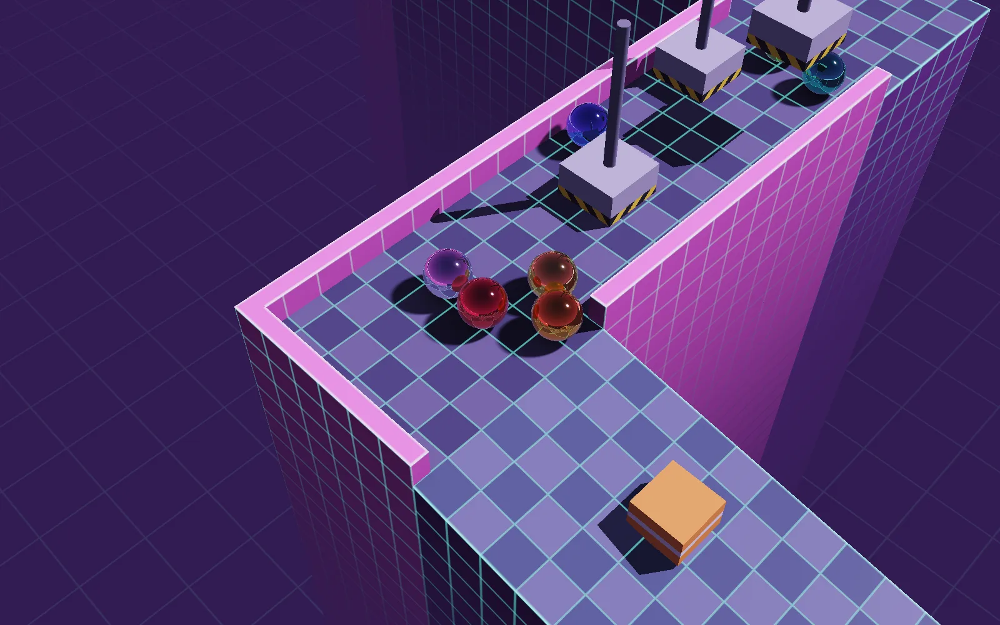
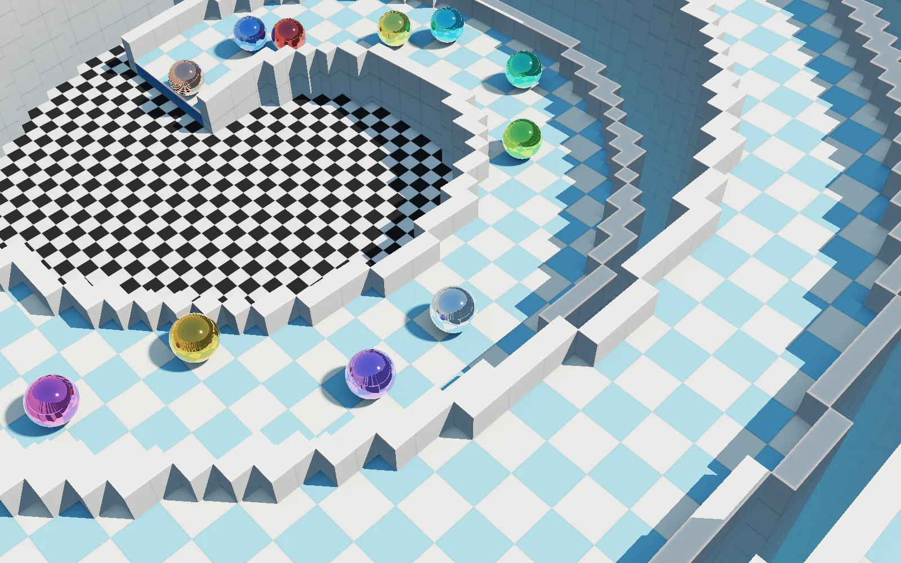
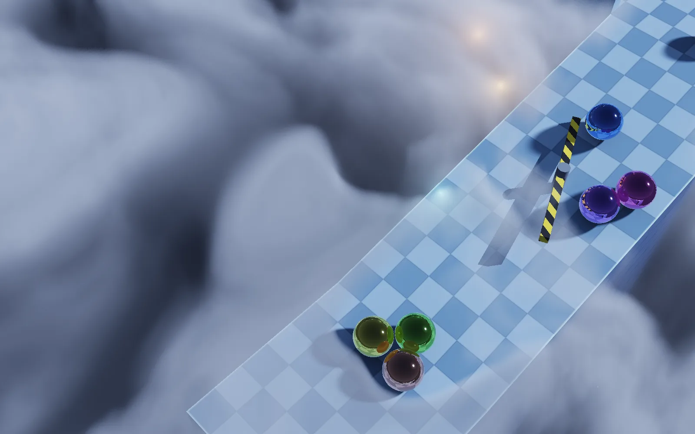
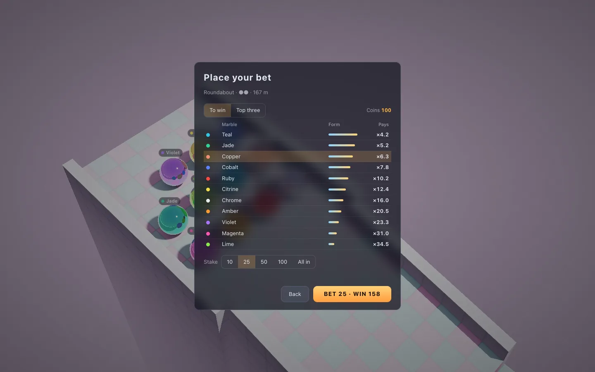
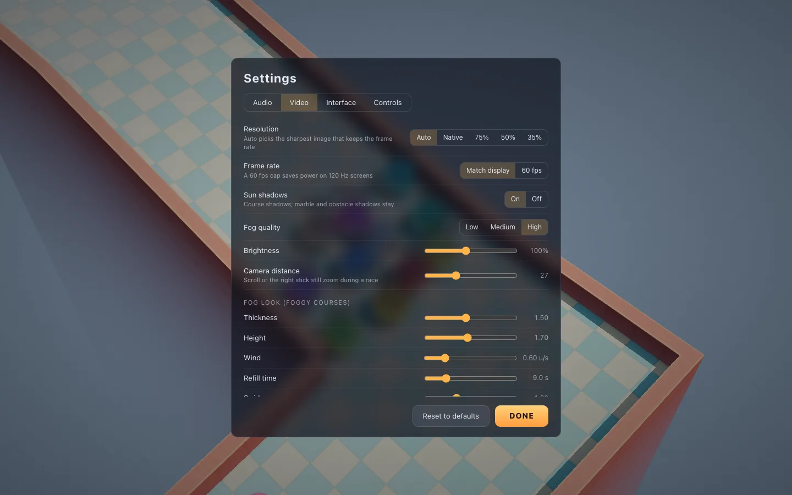
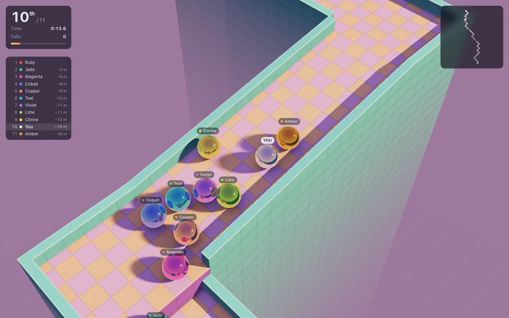

Obstacles with timing to learn
Pinball bumpers, spinning sweepers, sliding pushers that shove you off the edge, and stompers that flatten anything underneath. Add ice, boost pads and two-wide catwalks over the drop.
Roll fast. Hit nothing. Don't fall off.
A downhill marble racer for the browser. Ten rival marbles, 44 floating obstacle courses, and nothing but air past the edges.
Floating courses built from raised tiles, with drops you can roll off at any time. Some have rails and most don't. Get to the bottom before the other ten marbles do.

Pinball bumpers, spinning sweepers, sliding pushers that shove you off the edge, and stompers that flatten anything underneath. Add ice, boost pads and two-wide catwalks over the drop.

Banked hairpins, funnel bowls that drain into an exit channel, round platforms swept by giant spinners, and spiral pits that wind two or three laps down to a finish at the bottom.

On the foggy courses the mist is a live fluid simulation. Every marble clears a path through it, swirls it in its wake, and the wind slowly fills it back in.

Steer the chrome marble yourself, or sit back, pick a marble and stake your coins. The odds come from how the marbles actually perform in simulated races.

The game finds your screen's refresh rate and renders as sharply as it can while holding it: native resolution on a fast GPU, lighter settings on a laptop. Or set it yourself.
Plug in an Xbox, PlayStation or Switch Pro pad. Analog steering, full menu navigation and rumble when you fall.
Rolling, glassy clacks, bumper boings and music that changes key with each course, all generated as you play.
Races run from about half a minute to two. Fall off and you're back at the last checkpoint in a second.
Choose Easy, Normal or Hard. The AI picks lanes, times its run under stompers and learns from whatever knocks it off.
Seven courses are hand-built. The other 37 are laid out by a course generator, each with its own theme, difficulty and mix of obstacles, and each the same every time you play it.
Plus Glacier Glide, Hammer Hall, Funnel Falls, Spiral Mine, The Pinwheel, Halo, The Drain and 28 more.

You steer the chrome marble against ten AI rivals.
Eleven AI marbles race, and you put your coins on one.
The whole game, with its renderer, physics, AI, audio and 44 courses, is a single page you can read with view-source.
Every pixel is traced through a grid of course tiles in one WebGL2 shader, with sun shadows, chrome reflections and analytic obstacles. No meshes.
The mist is a stable-fluids simulation with vorticity, advected by wind and pushed by every marble, then ray-marched with light scattering.
Every effect and the music come from Web Audio oscillators and noise. There are no audio files at all.
A frame-rate governor reads the GPU's frame time and adjusts resolution and fog detail to stay inside your screen's refresh budget.
| Action | Keyboard, mouse & touch | Controller |
|---|---|---|
| Roll | Drag away from your marble (further is faster), or W A S D / arrows | Left stick or D-pad |
| Zoom | Scroll wheel | Right stick |
| Pause | Esc or P | Start |
| Watch another marble | Tab, or click the standings (bet mode) | LB / RB |
| Menus | Mouse, Tab and Enter | D-pad, A to select, B to go back |
Yes. Marble Mist is free to play with no ads, accounts or purchases, and the source code is MIT-licensed on GitHub.
No. Press Play and it runs in the tab. It needs a browser with WebGL2, which every current version of Chrome, Edge, Firefox and Safari has.
Yes. Drag on the screen to steer. It's at its best on a laptop or desktop, especially the foggy courses, and the game lowers its resolution to stay smooth on smaller devices.
Any controller your browser recognises as a standard gamepad works, including Xbox, PlayStation and Switch Pro. Steering is analog, menus are fully navigable, and supported browsers add rumble.
Browsers only allow sound after you interact with the page, so click or press a key once. Volumes for music, effects and menu sounds are under Settings.
Your settings and bet-mode coins are saved in your browser on this device. There are no accounts, so nothing leaves your machine.
Open Settings, then Video. Set the resolution to 50% or 35%, turn sun shadows off, and set fog quality to Low. The Auto setting already lowers resolution on slower machines.
One click to play. No sign-up, no download.